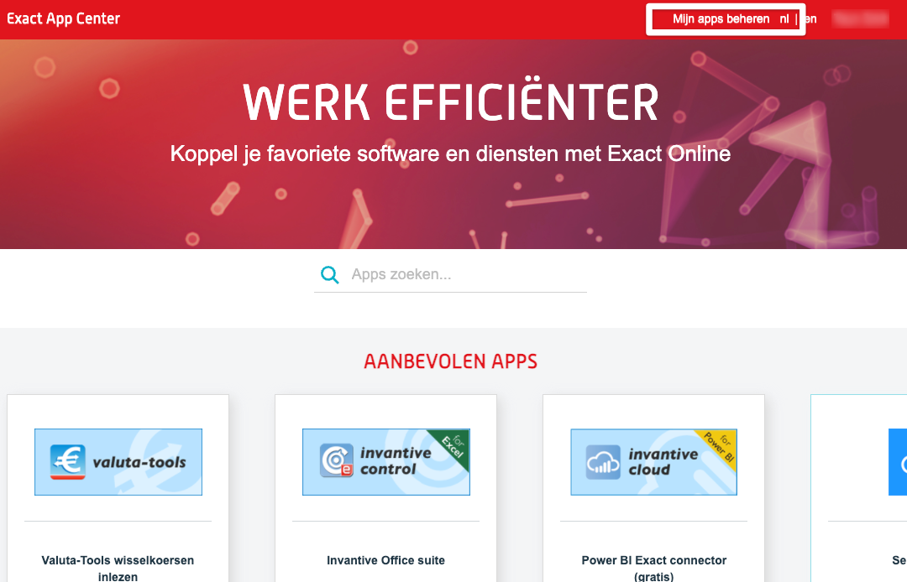
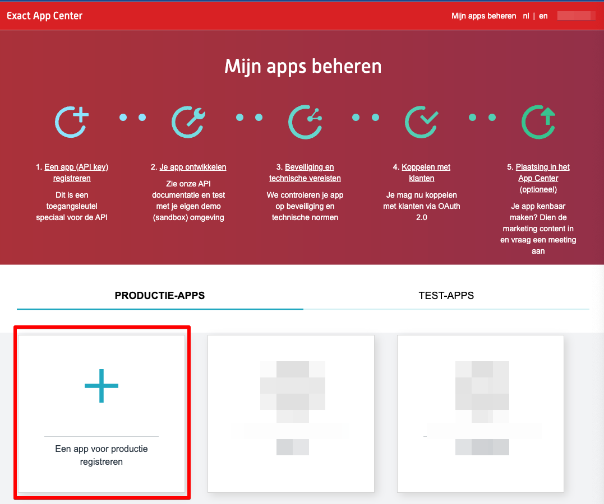
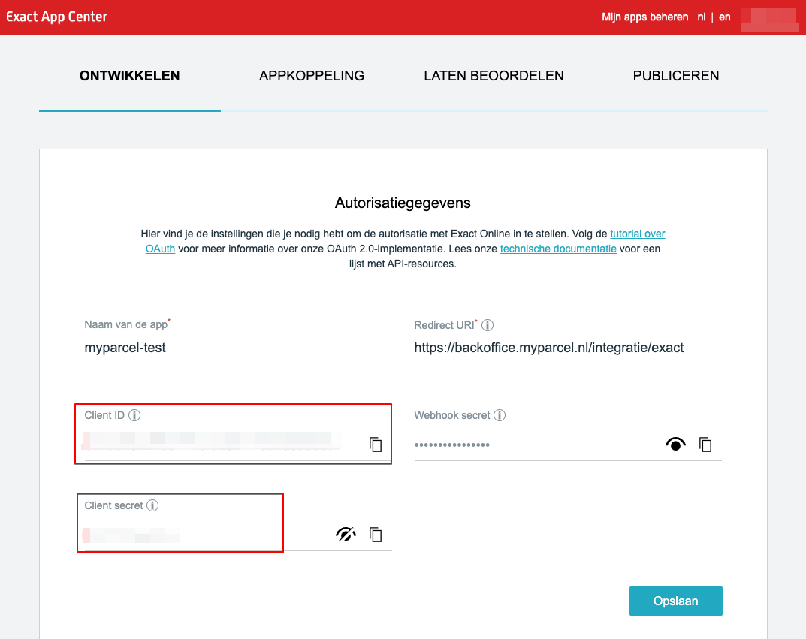

Inleiding
In deze handleiding wordt uitgelegd hoe je de Exact Online koppeling kunt installeren en hoe deze werkt.
Let op! Het is noodzakelijk om de module Handel af te nemen bij Exact Online voor deze koppeling. Meer informatie over deze module is hier te vinden.
1. Installatie
1.1 Nieuwe installatie
Om de koppeling tussen Exact Online en MyParcel te kunnen maken, dien je eerst de app te creëren. Dit doe je nadat je bent ingelogd in jouw Exact Online account door op Mijn apps beheren te klikken. Klik hier om naar jouw app center te gaan.
Op de volgende pagina klik je op het plusteken om de app te registreren.

In de popup voer je een unieke naam in voor de MyParcel app (bijv. MyParcel + jouw shopnaam) en de redirect url. Vink de voorwaarden aan, en registreer de app.
Redirect URL: "https://backoffice.myparcel.nl/integratie/exact"
Op de autorisatiepagina zie je dat er een Client ID en een Client secret ID zijn aangemaakt.

Deze 2 ID's kopieer je en plakt ze in het Exact venster op de integratie pagina in de backoffice van MyParcel.
De intergratie pagina kan je hier vinden: https://backoffice.myparcel.nl/settings/integration
1.2 Updaten bestaande installatie
Wanneer er een nieuwe versie van de Exact-koppeling live wordt gezet, hoef je je als gebruiker geen zorgen te maken over het installeren van een nieuwe versie. Deze wordt automatisch geüpdatet, waardoor je altijd de meest recente versie gebruikt.
2. Gebruik koppeling
2.1 Importeren van orders
Middels de knop + Importeer externe orders in het zendingenoverzicht kan je openstaande goederenleveringen vanuit Exact Online importeren.
Belangrijk Alleen nieuwe goederenleveringen worden geïmporteerd. Goederenleveringen die voor de koppeling zijn gemaakt worden niet opgehaald door MyParcel.
De openstaande goederenleveringen worden opgehaald vanuit Exact Online. Deze zijn middels de losse Importeer of Importeer geselecteerde orders te importeren.
Bij een succesvolle actie zal de Importeer wijzigen in een groen vinkje. Wanneer er een rode driehoek verschijnt is mogelijk iets mis met het adres. Wijzig deze in Exact Online en importeer de goederenlevering opnieuw.
Na het importeren van de goederenleveringen is het nog mogelijk om de zending eventueel nog aan te passen. Wanneer een barcode is gegenereerd zal deze dircet teruggestuurd worden naar het veld "Trackingnummer" binnen de desbetreffende goederenlevering in Exact.
2.3 Veelgestelde vragen over het gebruik van de plugin
Worden de barcodes teruggekoppeld naar Exact?
Ja, de barcode zal teruggekoppeld worden aan Exact na de zending is voorgemeld.